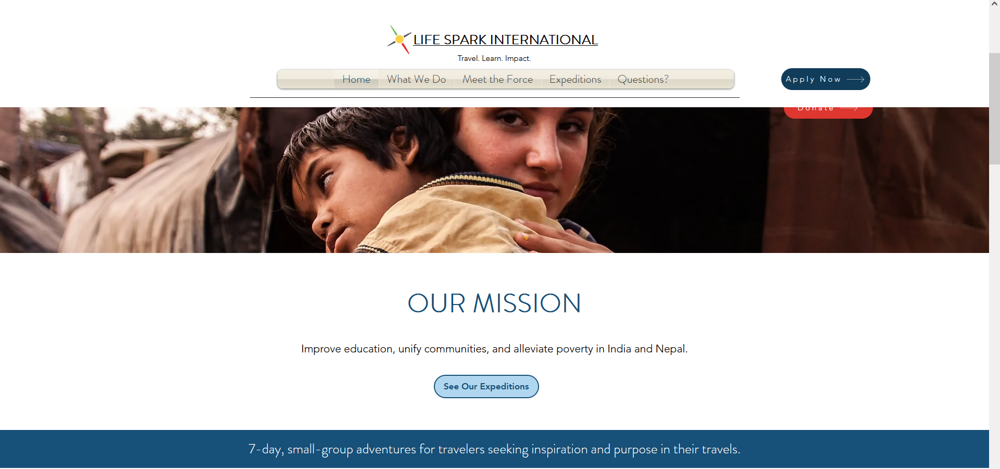
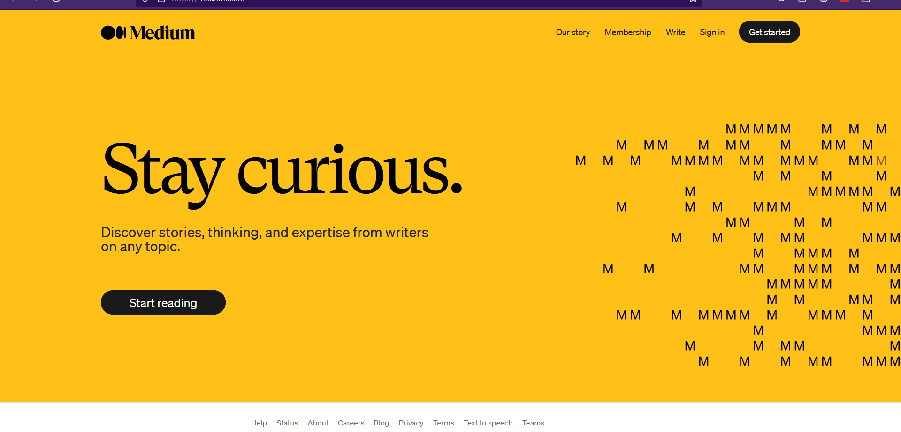

Website 1
White space and clean design
White space, also known as negative space, refers to the empty or unused space between elements on a webpage. Clean design emphasizes simplicity, clarity, and minimalism, often incorporating ample white space to reduce clutter and allow content to breathe. In web design, white space plays a crucial role in enhancing readability, guiding user attention, and conveying a sense of elegance and sophistication. Clean design principles prioritize the removal of unnecessary elements and distractions, resulting in interfaces that are visually appealing, easy to navigate, and focused on delivering a seamless user experience.
Website 2
Fitt's Law
Fitt's Law is a principle in human-computer interaction and ergonomics that predicts the time required to rapidly move to a target area is a function of the distance to the target and the size of the target. In web design, this principle suggests that larger and closer elements on a webpage are easier to click or interact with. Designers often apply Fitt's Law by making important elements, such as buttons or navigation links, larger and more prominent, especially on mobile devices where precision may be more challenging.
Website 3
PARC: Contrast
In this context, "Contrast" refers to the deliberate differentiation between elements in a design to create visual interest,hierarchy, and emphasis. In web design, utilizing contrast effectively involves manipulating various design elements such as color,size, shape, texture, or typography to make certain elements stand out from others. For example, using contrasting colors for text and background can enhance readability, while employing contrasting font weights or sizes can emphasize important information. Contrast helps to guide users' attention, differentiate between different types of content, and create a sense of hierarchy within a webpage. By strategically applying contrast, designers can enhance the visual appeal and usability of their designs,ultimately improving the overall user experience.